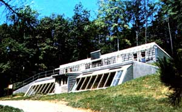
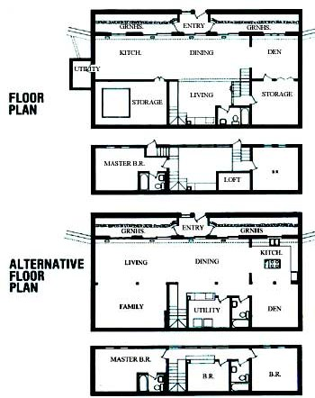

With My MOTHER's House pretty much finished, some of the people involved in designing and constructing our earth shelter got together recently to analyze the project (with the benefit of hindsight). Here, then, are some of the topics that were raised at that meeting, as well as a breakdown of a few of the costs involved in building that structure.
Our accounting department's records show $48,855 billed to the underground house project ... which includes materials, contracted labor (such as painting, excavation, and the application of one waterproofing system), and tool rental. Items that have not been installed are cabinetry, finished floors, closets, bathroom fixtures, light fixtures, and appliances. We estimate that it would take another $10,000 to $15,000 to complete the residence.
Furthermore, by applying common ratios of materials-to-labor for construction, we can figure that it would have cost between $115,000 and $125,000 to have had a house like ours built by a contractor ... with no owner help whatsoever. The average person who decides to put up his or her own home, however, would likely find the price falling somewhere between our out-of-pocket expense and the contracted figures we just mentioned. Consequently, the cost per square foot for a structure built to our exact (and purposely impractical) specifications would amount to between $40 and $85.
Of course, the building could have been constructed for considerably less money, and we'd like to examine some of the design options that would have resulted in a lower per-square-foot price. Bear in mind, however, that most of the changes we'll mention involve compromises ... you'll have to decide just what represents real economy to you.
My MOTHER's House has very strong walls. They're built from dry-stacked, 12" retaining-wall blocks that are surface-bonded and have their cores filled with concrete and rebar. Some preliminary calculations suggest that an 8"-thick poured and reinforced concrete wall might have been substantial enough for our residence. (Please remember that each building site requires specific stress computations based on the soil type and hydrology, and that an 8"-thick wall might not be strong enough for your shelter.) It cost $4,380 to build the back and side retaining walls for My MOTHER's House ... but we could have built forms from 3/4" plywood and poured an 8"-thick wall for about $2,750. What's more, we probably could then have reused the plywood for subflooring and/or roof sheathing.
On the other hand, the Surewall surfacebonding cement we used on our block walls gave us an interior surface that we felt no need to finish further, which saved the cost of paint or other coating. In addition, the surface-bonding cement also helped in waterproofing the exterior walls. Finally, the 12"-thick wall provides half again as much thermal mass as would an 8 "-thick one.
A house such as ours could be built without pouring a slab ... as long as the footings were adequate to support the weight of the structure and to resist tilting at the rear wall. By going that route, we could have saved about 35 yards of concrete (at $42 per yard) and $100 worth of wire mesh reinforcement. Our alternative flooring would have been rammed earth with quarry tile, or something similar, atop it. The total thermal mass available for heat storage would have been comparable, though the labor involved in preparing the rammed earth would have been considerably greater.
We decided to experiment with a roofing system made by the Homasote Company. Including the sheathing material for the above-grade roof and the 3-1/2 "-thick polyurethane insulation for both roof sections, we paid $5,300 to "top off" our building. Broken d n on a cost-per-square-foot basis, that amounts to $2.50 for sheathing and insulation on the rear section and $1.75 for the sod roof insulation alone. The shingled ... a could , instead, have been sheathed with 1/2" plywood and insulated to an equivalent value with rigid board for about $1.75 per square foot, and the sod roof could have been thermally protected for $1.50 per square foot.
There are two important trade-offs to be considered, however. First, the Homasote products are very easy to apply and thus can save a considerable amount of labor. This might be important for someone who's trying to build his or her own home and hold a job at the same time. Second, the Homasote roof decking has a finished material on its inner surface. It can be laid on top of the rafters, and no Sheetrock or other drywall is needed to produce an attractive ceiling.
We tried as many different materials and techniques as we could while building the house (a procedure that certainly added to the cost), and the active solar system we included'is largely for demonstration purposes. We tied up $1,125 in materials for the rock storage bed and ducts, and a great deal of labor was involved, as well. The system performs nicely, but the fireplace we put in should actually provide more than enough backup heat for the passive solar elements in the building.
We experimented with various groundsource heat exchangers to cool our residence, and they were by no means inexpensive. All the 15" pipe, backhoe work, and miscellaneous ducting and registers cost $3,600 ... which would buy a pretty big air conditioner. Of course, the cool tubes cost nothing to run, but we don't know for certain-at this time-how they compare in performance with a conventional system. We're most concerned about the possibility of the home's overheating on warm days in the fall, when the angle of the sun is dropping to the point where passive gain is significant, and the earth temperature is still warm from summer. Because Eco-Village visitors were coming through the building every day during the autumn, it was difficult to get heating/cooling performance figures ... but we did see indoor temperatures warmer than those outdoors on a few September days.
Though some people might question our investment in top-of-the-line Andersen insulated windows and doors, we believe that the roughly $5,000 we shelled out for the lot of them will prove to have been a bargain as the years pass.
There's been an ongoing debate among staff members about whether the I "-polystyrene insulation that extends from the footings up the back and side walls to six feet below grade (it's 2" thick above that) is really necessary. The thermal merits are certainly open to discussion, but everyone does agree that the insulation eliminated the possibility of condensation on the interior of the walls ... which might otherwise have been caused by a large temperature differential. In any event, the $350 cost of the material doesn't amount to a great expense.
We haven't been able to find anyone who worked on our house project who isn't wholeheartedly enthusiastic about the Effective Building Products bentonite clay we used to waterproof the back and side walls. People who've checked the books have raised a question or two about the rubber membrane on the sod roof, however. The installed cost of the material (with a day's help from a local roofing company) ran $1,925 ... or $2.14 per square foot. The Bentonize, on the other hand, cost 75 cents per square foot and the labor of four men for a day.
The final area in which we might have earned some savings as a result of design modifications is the sod roof on the front half of the house. Now it's generally agreed that there's no great thermal advantage to putting 8" of earth on the roof of the building, and-in fact-we insulated the front roof just as heavily as we did the rear one anyway! The main advantages of the earthen covering, then, are aesthetic, so if you're willing to forgo the blending roof line, etc., there are some savings available. Specifically, it cost us about $1.25 more per square foot, or a total of $1,125, to have a sod roof rather than to make the two roofs match.
We recognized early in the project that our building couldn't be laid out as a residence ... since we would be delivering lectures to groups of as many as 100 people at a time inside. The large open area that appears in the center of our floor plan is now occupied by some 50 chairs, and when the downstairs bathroom is completed, it will have to be equipped with a ten-foot-long ramp to accommodate folks in wheelchairs. For those reasons we've included here an alternative floor plan, one that might be more suitable for residential use.
The floor plan we used imposed other limitations on the practicality of our house, too. For example, placing the upstairs floors 54 inches above the slab meant that the space below those floors couldn't be included in the calculated living area. Five hundred square feet of space was thereby lost, and the cost per square foot was driven up by almost a third. Of course, that area beneath the floors is put to use ... for the rock box where we store solar heat and for general storage. But it does decrease usable living space.
A further indication that the second-floor design might have been better planned is the fact that it's difficult to see over the windowsills in the bedrooms. A six-foot-tall individual can see out fairly well, but-unfortunately-the knee wall at the front of the building limits the view of the valley. Some combination of raising the second story and (possibly) lowering the slab below those floors would have presented a beautiful morning landscape and would have left more area on the ground floor.
Because of the limitations imposed by the "meeting hall" floor plan, we ended up using a different set of stairs for each bedroom. A well-thought-out residential floor plan could work with one stairway, which would save floor space and construction money.
What's more, the layout of the western stairs left an area above the ground-floor bathroom that ended up being a loft. The platform-which is at about the same level as the top of the Russian fireplace-isn't a particularly useful space, though it has proved to be a good observation deck for watching seminars on earth sheltering.
From its very inception the house project was at a disadvantage because of the need to work within the limitations of a slab that had already been poured. For the most part, the 25' X 60'pad worked well for the house itself, but the greenhouse design was admittedly compromised by the foundation layout. Our sunspace would be more convenient if it were at least two feet wider. As it is, the gardening area is limited and shoulder room is confined. Worse yet, the design of the footing casts shadows over some of the growing bed in the winter months.
One approach that has been suggested by workers involved in the project would be to extend the 4" X 12" beams that support the sod roof beyond the front wall so they could be used for the greenhouse roof as well. In that case, it might be desirable to mount the greenhouse glazing vertically ... to limit summer heat gain and to widen the area inside the space.
When we wrote about the masonry backup heater for our earth shelter in issue 77, we'd had little chance to test the woodburner ... since the last bricks weren't laid until late spring. But today, with nearly half of the winter behind us, we have a problem to report.
After the first few powerful burns in the Russian fireplace, stress cracks developed on one side and over the loading door. Though no smoke has leaked into the room and the heater has continued to perform very well indeed, the cracks could become a serious concern ... if they widen. The big question, however, is why the unit cracked in the first place.
According to Albie Barden, who operates the Maine Wood Heat Company (which builds masonry heaters and sells plans and products related to them), there are several problems with out fireplace that could have produced the cracks. First, we used a portland cement rather than a clay mortar. The latter is far more ile3Ciblc and is more able to stand the stress exerted during differential heating of the masonry materials. Second, the vertical first flue of our heater undergoes the most stress because flames lick up into it. Barden believes that we should have taken some measures to compensate for that ... such as building double brick layers with air gaps, installing mineral wool insulation behind the firebrick, and/or increasing the passage's size. Since the side crack runs right along the first passage, overheating at that point would certainly seem to be the problem.
Mr. Barden also suggested that the chimney's position subjects the heater to too much stress from the weight of the masonry bearing down from above. Our chimney is directly above the area in the loading end where that crack has developed, so he may well have pinpointed the cause of that difficulty, as well. In his lengthy commentary, the masonry-heater expert also expressed concern over our use of a flue tile to cap the heat exchange runs. He fears that the tile will eventually break under the thermal stress and weight ... though we haven't had that problem yet.
On the brighter side, the Russian fireplace performs beyond our expectations. It fires very easily and radiates a strong, even heat for many hours after the fire has died away. There's been almost no creosote accumulation (actually, the material that does build up is more in the nature of soot), and the heater doesn't seem to consume much wood, either!
Some of the costs we incurred could have been reduced by better planning and/or ordering. For example, we purchased 15,900 costly highmanganese exterior bricks, but used only 13,000. That's an excess expenditure of about $350 ... though we have the opportunity of putting them to use on other projects. (Our best theory about why the order was so far off is that the estimator forgot to allow for the doors and windows in the front wall.)
We also wasted about 3,000 of the bricks when the decision was made to shorten the knee wall at the front of the sod roof. The materials were ruined in knocking the wall down, and there was further expense in recapping the shorter wall and adding a safety railing.
Another approach that we took didn't cost much money, but can't be recommended in the long run. When installing glazing in the center section of the second-story windows, we used a double layer of fiberglass-reinforced plastic on handmade frames. Unfortunately, repeated attempts to keep the plastic from buckling and to remove condensation have been unsuccessful. We used fiberglass because it's inexpensive and translucent (which cuts down glare inside the house), but we've since decided that it would be wise to go ahead and install translucent glass instead.
One structural aspect of the building has proved to be unsatisfactory, as well. The headers above the sliding glass doors in the brick wall are made from sections of angle iron welded back to back. For the standard , width doors the 1/7" X 2" metal has been adequate ... but over one exceptionally wide door, the angle iron has sagged somewhat, as a result of the weight of the wall and roof above. This span is approximately eight feet ... and it obviously would be advisable to use heavier material to form the header for this entrance.
In our case, the fact that the beams running lengthwise in the building aren't tied together (the section in the west stairwell was cut away to provide headroom) isn't a great concern ... since the walls are plenty strong enough to stand up on their own. If the walls were slightly less substantial, however, the additional support of a continuous lengthwise beam might be desirable.
We were also a bit concerned that the main brick wall and the brick chimney would become thermal "wicks" and conduct heat to the outside. Consequently, we formed a thermal break in the front wall at the ceiling level by using block, filling the cores with vermiculite, and "doctoring" the mortar with insulation, as well. No simple solutions presented themselves for the chimney, but-fortunately-the area there isn't too great. Still, both of these exposures undoubtedly do result in some heat loss, and it might have been better to design them so they wouldn't penetrate the building's shell.
Finally, though most of the interior of the house is very well daylit, natural illumination falls a bit short in the kitchen area. In retrospect, we realize that if the wall at the east end of the greenhouse had a window in it, the kitchen would be much brighter in the morning.
The construction and design process of My MOTHER's House has been fascinating and instructive to those of us who were involved in the project. In the preceding paragraphs we've tried to lay bare our mistakes ... for your benefit.
EDITOR'S NOTE: A detailed information package for My MOTHER's House, from which this article was adapted, is available for $15 - plus $1.00 shipping and handling - from Mother's Plans, P.O. Box A, East Flat Rock, North Carolina 28726. It includes a 20-page booklet of building techniques and designs, drawings, and two different floor plans.
|
 |
 |
|